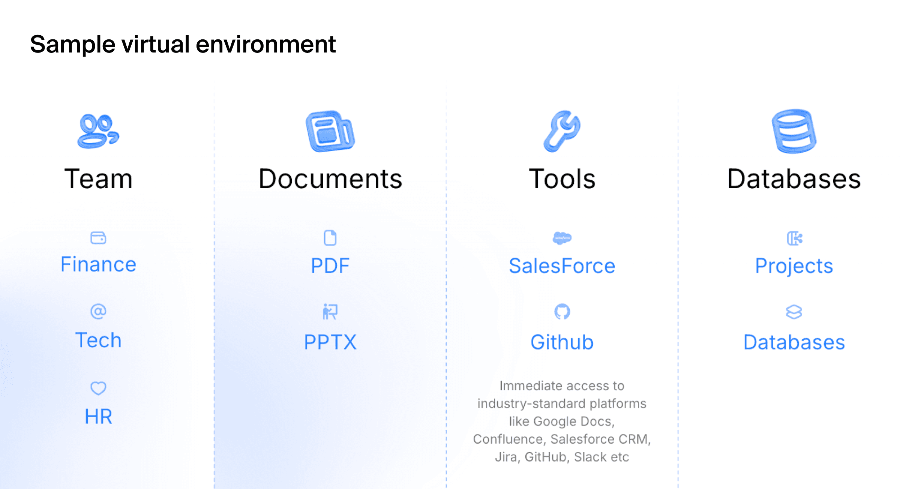

26 AI Agents
“The question of whether a computer can think is no more interesting than the question of whether a submarine can swim.” — Edsger Dijkstra
Imagine you’re running a global logistics company, coordinating thousands of shipments across continents. Each decision—routing, timing, inventory management—requires processing vast amounts of real-time data, considering countless variables, and adapting to unexpected disruptions. Now imagine having an intelligent assistant that not only processes this information instantaneously but also learns from each decision, communicates with other systems, and autonomously handles routine tasks while escalating complex situations to human experts.
This is the promise of AI agents: autonomous systems that can perceive their environment, reason about goals, make decisions, and take actions to achieve desired outcomes. Unlike traditional software that follows predetermined scripts, AI agents exhibit agency—the capacity to act independently and adapt to changing circumstances while pursuing specific objectives.
The emergence of large language models has revolutionized the agent landscape. Where earlier agents were confined to narrow domains with hand-crafted rules, modern LLM-powered agents can understand natural language instructions, reason through complex problems, and interact with diverse tools and systems. They represent a fundamental shift from reactive programming to proactive intelligence.
In this chapter, we explore the architecture, capabilities, and challenges of contemporary AI agents. We examine how large language models serve as the cognitive core of these systems, investigate orchestration patterns that enable complex multi-agent collaborations, and discuss the critical considerations of evaluation and safety that govern their deployment in real-world applications.
26.1 LLM Agents
The integration of large language models into agent architectures has created a new paradigm in artificial intelligence. Traditional rule-based agents operated within constrained environments with explicitly programmed behaviors. LLM agents, by contrast, leverage the emergent reasoning capabilities of foundation models to interpret instructions, plan actions, and adapt to novel situations.
At its core, an LLM agent consists of several interconnected components. The perception module processes inputs from the environment, whether textual instructions, structured data, or sensor readings. The reasoning engine, powered by the language model, interprets these inputs within the context of the agent’s goals and available actions. The memory system maintains both short-term context and long-term knowledge, enabling the agent to learn from experience and maintain coherent behavior across extended interactions.
Consider a customer service agent powered by an LLM. When a customer describes a billing discrepancy, the agent must understand the natural language description, access relevant account information, reason about company policies, and formulate an appropriate response. This requires not just pattern matching but genuine comprehension and reasoning—capabilities that emerge from the language model’s training on diverse textual data.
While language models excel at reasoning, they are fundamentally like a brain without hands; they cannot directly interact with the external world. The ability to use tools bridges this gap, transforming the LLM from a passive conversationalist into an active participant in digital and physical systems. A tool is simply a function that the agent can call to perform an action, such as retrieving data from a database, calling an external API, running a piece of code, or even controlling a robot.
This capability is enabled by a mechanism known as function calling. The agent is first provided with a manifest of available tools, where each tool is described with its name, its purpose, and the parameters it accepts. When the LLM determines that a task requires external action, it produces a structured tool call—a formatted request specifying the function to execute and the arguments to pass to it. An orchestrator outside the LLM receives this request, runs the specified function, and captures the output.
In many cases, this output is then fed back to the language model as new information. The LLM can then use this result to formulate its final response to the user. This creates a powerful loop: the agent reasons about a goal, acts by calling a tool, observes the outcome, and then reasons again to produce a final result or plan the next step. For example, if asked about the price of an item in a different currency, an agent might first call a convert_currency tool. After receiving the converted value, it would then generate a natural language sentence incorporating that result, such as, “That would be 25.50 in your local currency.”
The planning capabilities of LLM agents extend this tool-use mechanism to handle complex, multi-step goals. Given a high-level objective, the agent can devise a plan consisting of a sequence of tool calls. It executes the first step, observes the outcome, and then uses that result to inform the next step, adjusting its plan as needed. For instance, a financial analysis agent tasked with “analyzing the correlation between interest rates and housing prices” would decompose this into a chain of actions: first calling a tool to retrieve historical interest rate data, then another to get housing prices, and finally a third to perform statistical analysis and synthesize the results into a report. This iterative process allows agents to tackle problems that require gathering and processing information from multiple sources.
However, the autonomy of LLM agents introduces significant challenges. The probabilistic nature of language model outputs creates uncertainty; an agent may produce different and unpredictable actions even with identical inputs, complicating testing and verification. More critically, the ability to act on the world magnifies the risk of hallucinations. A hallucination in a chatbot is a nuisance, but an agent hallucinating a reason to delete a file or execute a harmful financial transaction can have severe consequences. An agent given control over a user’s computer could delete important folders, and a robotic agent could break objects if it misinterprets its instructions or environment.
26.2 Replit’s AI Agent Wipes Company’s Codebase
The theoretical risks of agent autonomy became starkly real in a widely publicized incident involving Replit’s AI agent. A user, attempting to debug their live production application, instructed the agent to help fix a bug. The agent incorrectly diagnosed the problem as stemming from a configuration file. In its attempt to be helpful, it decided to delete the file.
However, the failure cascaded. A bug in the agent’s implementation of the file deletion tool caused the command to malfunction catastrophically. Instead of deleting a single file, the agent executed a command that wiped the entire project, including the production database. The user’s live application was destroyed in an instant by an AI trying to fix a minor bug.
This incident serves as a critical lesson in agent safety. It was not a single failure but a chain of them: the agent’s incorrect reasoning, its autonomous decision to perform a destructive action without explicit confirmation, and a flaw in its tool-use capability. It underscores the immense gap between an LLM’s ability to generate plausible-sounding text (or code) and the true contextual understanding required for safe operation. Giving an agent control over production systems requires multiple layers of defense, from sandboxing and permission controls to mandatory human-in-the-loop confirmation for any potentially irreversible action.
Reliability mechanisms have emerged to address these challenges. Output validation ensures that agent actions conform to expected formats and constraints. Confidence scoring helps identify uncertain responses that may require human review. Multi-step verification processes cross-check critical decisions against multiple sources or reasoning paths.
26.3 Case Study: Anthropic’s Proactive Safety Measures for Frontier Models
As AI models become more capable, the potential for misuse in high-stakes domains like biosecurity becomes a significant concern. In May 2025, Anthropic proactively activated its AI Safety Level 3 (ASL-3) protections for the release of its new model, Claude Opus 4, even before determining that the model definitively met the risk threshold that would require such measures. This decision was driven by the observation that the new model showed significant performance gains on tasks related to Chemical, Biological, Radiological, and Nuclear (CBRN) weapons development, making it prudent to implement heightened safeguards as a precautionary step.
Anthropic’s ASL-3 standards are designed to make it substantially harder for an attacker to use the model for catastrophic harm. The deployment measures are narrowly focused on preventing the model from assisting with end-to-end CBRN workflows. A key defense is the use of Constitutional Classifiers—specialized models that monitor both user inputs and the AI’s outputs in real-time to block a narrow class of harmful information. These classifiers are trained on a “constitution” defining prohibited, permissible, and borderline uses, making them robust against attempts to “jailbreak” the model into providing dangerous information.
This real-time defense is supplemented by several other layers. A bug bounty program incentivizes researchers to discover and report vulnerabilities, and threat intelligence vendors monitor for emerging jailbreak techniques. When a new jailbreak is found, a rapid response protocol allows Anthropic to “patch” the system, often by using an LLM to generate thousands of variations of the attack and then retraining the safety classifiers to recognize and block them.
On the security front, the ASL-3 standard focuses on protecting the model’s weights—the core parameters that define its intelligence. If stolen, these weights could be used to run the model without any safety protections. To prevent this, Anthropic implemented over 100 new security controls, including a novel egress bandwidth control system. Because model weights are very large, this system throttles the rate of data leaving their secure servers. Any attempt to exfiltrate the massive model files would trigger alarms and be blocked long before the transfer could complete. Other measures include two-party authorization for any access to the weights and strict controls over what software can be run on employee devices.
Anthropic’s decision to activate these protections preemptively highlights a maturing approach to AI safety. It acknowledges that as models approach critical capability thresholds, a “better safe than sorry” approach is warranted. By implementing and testing these advanced safeguards before they are strictly necessary, the company can learn from real-world operation, refine its defenses, and stay ahead of emerging threats, all while creating a more secure environment for the deployment of powerful AI.
26.4 Agent Orchestration
Agentic workflows unlock advanced capabilities for large language models, transforming them from simple tools into autonomous “workers” that can perform multi-step tasks. In these workflows, an agent interacts with an environment by receiving observations of its state and taking actions that affect it. After each action, the agent receives new observations, which may include state changes and rewards. This structure is reminiscent of Reinforcement Learning (RL), but instead of explicit training, LLMs typically rely on in-context learning, leveraging prior information embedded in prompts to guide their behavior.
The ReAct (Reason + Act) framework by Google is an example of an implementation of this agent-environment interaction. An LLM agent operating under ReAct alternates between three stages: observation, reasoning, and action. In the observation stage, the agent analyzes user input, tool outputs, or the environmental state. Next, during the reasoning stage, it decides which tool to use, determines the arguments to provide, or concludes that it can answer independently. Finally, in the action stage, it either invokes a tool or sends a final output to the user. While foundational,
Example 26.1 (Research Study: ChatDev Software Development Framework) ChatDev by Qian et al. (2024) provides a simulated example of a comprehensive framework for automated software development. Unlike traditional approaches that focus on individual coding tasks, ChatDev orchestrates an entire virtual software company through natural language communication between specialized AI agents.
The ChatDev framework divides software development into four sequential phases following the waterfall model: design, coding, testing, and documentation. Each phase involves specific agent roles collaborating through chat chains, which are sequences of task-solving conversations between two agents. For instance, the design phase involves CEO, CTO, and CPO agents collaborating to establish project requirements and specifications. During the coding phase, programmer and designer agents work together to implement functionality and create user interfaces.
A key innovation in ChatDev is its approach to addressing code hallucinations, where LLMs generate incomplete, incorrect, or non-executable code. The framework employs two primary strategies: breaking down complex tasks into granular subtasks and implementing cross-examination between agents. Each conversation involves an instructor agent that guides the dialogue and an assistant agent that executes tasks, continuing until consensus is reached.
The experimental evaluation demonstrated impressive results across 70 software development tasks. ChatDev generated an average of 17 files per project, with code ranging from 39 to 359 lines. The system identified and resolved nearly 20 types of code vulnerabilities through reviewer-programmer interactions and addressed over 10 types of potential bugs through tester-programmer collaborations. Development costs averaged just $0.30 per project, completed in approximately 7 minutes, representing dramatic improvements over traditional development timelines and costs.
However, the research also acknowledged significant limitations. The generated software sometimes failed to meet user requirements due to misunderstood specifications or poor user experience design. Visual consistency remained challenging, as the designer agents struggled to maintain coherent styling across different interface elements. Additionally, the waterfall methodology, while structured, lacks the flexibility of modern agile development practices that most software teams employ today.
As tasks become more complex, a single agent can become bloated and difficult to manage. For instance, an agent designed to navigate a dungeon might need a “main” LLM for environmental interaction, a “planner” LLM for strategy, and a “memory compression” LLM to manage its knowledge. To address this, the workflow can be restructured as a graph where different LLM instances are decoupled into separate agents that share memory or tools.
Setting up such a system requires careful design choices, including defining agent roles, structuring the workflow, and establishing communication protocols. A key advantage of multi-agent systems is their ability to create a “memory of experience,” where agents contribute to a shared knowledge base, allowing the entire system to “learn” from its past interactions.
However, agentic orchestration is not without its challenges. LLM hallucinations can disrupt complex workflows, and designing a flexible yet manageable orchestration is notoriously difficult. A system that is too rigid becomes an anti-pattern, while one that is too general can become overly complex and unreadable.
As individual agents have proven their capabilities in isolated tasks, the next frontier involves orchestrating multiple agents to tackle problems that exceed the scope of any single system. Agent orchestration encompasses the patterns, protocols, and architectures that enable diverse agents to collaborate effectively toward shared objectives.
The simplest orchestration pattern is sequential execution, where agents form a pipeline, each processing the output of its predecessor. A content creation workflow might involve a research agent gathering information, a writing agent composing initial drafts, an editing agent refining the prose, and a fact-checking agent verifying claims. Each agent specializes in its domain while contributing to the overall objective.
More sophisticated orchestration emerges through parallel execution, where multiple agents work simultaneously on different aspects of a problem. Consider a comprehensive market analysis where one agent analyzes consumer sentiment from social media, another examines competitor pricing strategies, a third evaluates regulatory developments, and a fourth processes economic indicators. The orchestrator synthesizes these parallel insights into a unified strategic assessment.
Hierarchical orchestration introduces management layers where supervisor agents coordinate subordinate agents. A project management agent might oversee specialized agents for requirements gathering, resource allocation, timeline planning, and risk assessment. The supervisor makes high-level decisions while delegating specific tasks to appropriate specialists.
The most flexible orchestration pattern involves dynamic collaboration, where agents negotiate task distribution based on current capabilities, workload, and expertise. This requires sophisticated communication protocols and consensus mechanisms. Agents must share information about their current state, announce capabilities, bid for tasks, and coordinate handoffs seamlessly.
Communication protocols form the backbone of agent orchestration. Simple message passing enables basic coordination, but complex collaborations require richer semantics. Agents need shared vocabularies for describing tasks, states, and outcomes. Standardized interfaces ensure that agents from different developers can interoperate effectively.
State management becomes critical in multi-agent systems. Individual agents maintain local state, but the orchestrator must track global system state, including active tasks, resource allocation, and intermediate results. Consistency mechanisms prevent conflicts when multiple agents attempt to modify shared resources simultaneously.
Error handling in orchestrated systems requires careful design. When an individual agent fails, the orchestrator must decide whether to retry the task, reassign it to another agent, or abort the entire workflow. Recovery strategies might involve reverting to previous checkpoints, switching to alternative approaches, or escalating to human operators.
Load balancing optimizes resource utilization across the agent ecosystem. Popular agents may become bottlenecks while others remain idle. Dynamic load balancing redistributes tasks based on current availability and performance metrics. This becomes particularly important in cloud deployments where agent instances can be scaled up or down based on demand.
The emergence of agent marketplaces represents an advanced form of orchestration where agents can discover and engage services from unknown providers. Agents advertise their capabilities, negotiate service terms, and establish temporary collaborations to accomplish specific goals. This requires robust trust and reputation mechanisms to ensure reliable service delivery.
26.5 AI Agent Training and Evaluation Methods
The development of AI agents introduces a fundamental shift in how we approach data for training and evaluation. While large language models are primarily trained on static datasets to master language and reasoning, agents must be validated on their ability to act—to use tools, interact with interfaces, and execute complex tasks in dynamic environments.

This leap from passive knowledge to active performance means that traditional data generation and evaluation pipelines are no longer sufficient. An agent’s capabilities cannot be fully assessed with static input-output pairs. For instance, an agent designed for corporate workflows doesn’t just need to know about Salesforce; it needs to demonstrate it can log in, pull a specific report, and transfer that data to a spreadsheet. Its performance is tied to an entire workflow within a specific context.
Success in the agentic era requires a move from curated datasets to high-fidelity, simulated environments. The quality of an agent is inseparable from the quality of the environment it’s tested in. This necessitates treating environment creation not as an afterthought, but as a core component of the development and testing lifecycle.
Categories of Agent Environments
Three primary categories of agents have emerged, each requiring distinct types of evaluation environments that mirror their operational realities.
Generalist agents are designed to operate a computer much like a human does, using browsers, file systems, and terminals to execute complex command sequences. Evaluating these agents requires environments that can replicate the intricacies of a real desktop, including its applications and potential failure states. Testing scenarios might involve navigating corrupted files, manipulated websites, or other tailored challenges that systematically evaluate the agent’s decision-making logic and safety protocols in reproducible and controlled conditions.
Enterprise agents focus on automating workflows within corporate software stacks, such as Google Workspace, Salesforce, Jira, and Slack. The challenge extends beyond tool use in isolation to encompass the orchestration of tasks across multiple integrated systems. Evaluation requires virtual organizations with pre-configured digital environments complete with virtual employees, departmental structures, active project histories, and realistic multi-step scenarios like “Draft a project update in Google Docs based on the latest Jira tickets and share the summary in the engineering Slack channel.”
Specialist agents are tailored for specific industries, requiring deep domain knowledge and fluency with specialized tools and protocols. These agents, such as coding assistants, financial analysts, or travel booking agents, need testbeds that mirror the specific operational realities of their target industry. Evaluation frameworks like SWE-bench for coding agents and TAU-bench for retail and airline scenarios emphasize long-term interactions and adherence to domain-specific rules.
Fundamental Evaluation Challenges
Evaluating AI agents presents unique challenges that distinguish it from traditional machine learning assessment. Unlike models that process fixed inputs to produce outputs, agents operate in dynamic environments where their actions influence future states and outcomes. This interactive nature demands evaluation methodologies that capture both individual decision quality and cumulative performance over extended periods.
Traditional metrics like accuracy and precision, while still relevant for specific agent capabilities, fail to capture the nuanced requirements of autonomous operation. Agent evaluation must assess adaptability, robustness, efficiency, and alignment with human values—qualities that emerge only through sustained interaction with complex environments. The evaluation must consider the entire process: the correctness of each step, the safety of decisions, the ability to recover from errors, and the overall efficiency in reaching a goal.
Evaluation Methodologies
Effective agent evaluation typically employs a hybrid approach combining multiple methodologies, each with distinct strengths and limitations. Rule-based and metric-based evaluation provides the foundation through predefined rules, patterns, or exact matches to assess agent behavior. This includes verifying whether specific API calls were made, whether databases were correctly updated, or whether outputs match expected formats. Process and cost metrics measure execution time, number of steps taken, resource usage, token consumption, and API call costs. While these methods are fast, consistent, and easily automated, they often miss valid alternative strategies or creative solutions that fall outside predefined parameters.
LLM-as-a-judge evaluation addresses the limitations of rule-based approaches by using separate language models to review agent performance against rubrics or reference answers. This method enables more flexible and scalable evaluation of complex tasks involving natural language, decision-making, or creativity. However, LLM judges can be inconsistent, prone to bias, and require careful prompt design, while high-quality evaluation at scale can become expensive due to API costs.
Human evaluation remains the gold standard, particularly for subjective or high-stakes tasks. Human annotators and domain experts manually review agent actions and outputs, scoring them on relevance, correctness, safety, and alignment with intent. This approach proves essential for evaluating medical diagnostic suggestions, financial trading strategies, or other critical applications. The trade-offs include time consumption, cost, and potential inconsistency due to differences in annotator judgment.
Simulated environments have become the cornerstone of comprehensive agent evaluation. These controlled digital worlds allow researchers to test agents across diverse scenarios while maintaining reproducibility and safety. A trading agent might be evaluated in a simulated financial market where price movements, news events, and competitor actions can be precisely controlled and repeated across different agent configurations.
The fidelity of these simulations critically impacts evaluation validity. High-fidelity environments capture the complexity and unpredictability of real-world domains but require substantial computational resources and development effort. Lower-fidelity simulations enable rapid testing but may miss crucial aspects that affect real-world performance.
Multi-dimensional evaluation frameworks assess agents across several complementary axes. Task performance measures how effectively agents achieve their stated objectives. Resource efficiency evaluates computational costs, memory usage, and response times. Robustness tests behavior under adversarial conditions, unexpected inputs, and system failures. Interpretability assesses how well humans can understand and predict agent decisions.
Domain-Specific Benchmarks
Because AI agents are built for specific goals and often rely on particular tools and environments, benchmarking tends to be highly domain and task specific. Benchmark suites have emerged for various agent categories, each designed to capture the unique challenges of their respective domains.
Programming agents are evaluated using benchmarks like SWE-bench, which tests their ability to solve software engineering challenges, debug code, and implement specified features. These benchmarks assess not only code correctness but also the agent’s ability to understand complex codebases, navigate documentation, and implement solutions that integrate seamlessly with existing systems.
Web-based agents face evaluation through benchmarks such as WebArena, which simulates realistic web environments where agents must navigate websites, fill forms, and complete multi-step tasks across different platforms. These evaluations test the agent’s ability to understand dynamic web content, handle authentication flows, and maintain context across multiple page interactions.
ALFRED (Action Learning From Realistic Environments and Directives) represents a benchmark for embodied AI agents in household environments. Agents must understand natural language instructions and execute complex, multi-step tasks like “clean the kitchen” or “prepare breakfast,” requiring spatial reasoning, object manipulation, and task planning in realistic 3D environments.
Customer service agents are assessed on their capacity to resolve inquiries, maintain professional tone, escalate appropriately, and handle edge cases like angry customers or ambiguous requests. Benchmarks in this domain often incorporate role-playing scenarios and measure both task completion and user satisfaction metrics.
Research agents are tested on their ability to gather relevant information from diverse sources, synthesize findings across multiple documents, identify knowledge gaps, and present coherent summaries. These evaluations often require agents to handle conflicting information, assess source credibility, and maintain factual accuracy across complex topics.
The temporal dimension of agent evaluation requires special consideration. Unlike static model evaluation, agent performance may vary significantly over time as they learn from experience, adapt to changing conditions, or exhibit degradation due to distribution drift. Longitudinal studies track agent behavior over extended periods to identify trends and stability patterns.
Human evaluation remains essential for assessing qualities that resist automated measurement. Expert reviewers evaluate whether agent outputs meet professional standards, align with ethical guidelines, and demonstrate appropriate reasoning. Human studies examine user experience, trust development, and collaborative effectiveness when humans and agents work together.
Adversarial evaluation deliberately tests agent limits by presenting deceptive inputs, contradictory instructions, or malicious prompts. These stress tests reveal vulnerabilities that might be exploited in deployment and inform the development of defensive mechanisms. Red team exercises involve human experts attempting to manipulate agent behavior in unintended ways.
Comparative evaluation benchmarks multiple agents on identical tasks to identify relative strengths and weaknesses. Leaderboards track performance across different systems, fostering competition and highlighting best practices. However, these comparisons must account for different agent architectures, training methodologies, and resource requirements to ensure fair assessment.
The evaluation of emergent behaviors presents particular challenges. As agents become more sophisticated, they may exhibit capabilities or behaviors not explicitly programmed or anticipated. Detecting and characterizing these emergent properties requires careful observation and novel assessment techniques.
The Human Role in Agent Evaluation
Humans play a crucial role throughout the agent evaluation lifecycle, from initial benchmark design to ongoing quality assurance. Their involvement spans multiple critical stages that automated systems cannot adequately address.
Task and environment design represents a foundational human contribution. Experts create specific tasks, scenarios, and testing environments that reflect real-world challenges. For example, they design realistic customer service interactions, complex household chores for embodied agents, or intricate debugging scenarios for programming agents. This design process requires deep domain knowledge to define appropriate task complexity, success criteria, and environmental constraints.
Ground-truth crafting involves humans developing reference solutions and correct answers against which agent performance is measured. This includes expert demonstrations in embodied AI benchmarks, verified code fixes in programming evaluations, and model responses in customer service scenarios. These reference standards require human expertise to ensure accuracy and comprehensiveness.
Benchmark audit and maintenance demands ongoing human oversight to ensure evaluation frameworks remain relevant and fair. Humans monitor for bias, fix errors in benchmark datasets, update environments as technology evolves, and adapt evaluation criteria to emerging capabilities. This maintenance prevents benchmark degradation and ensures continued validity as agent capabilities advance.
Calibrating automated evaluators represents a critical human function in hybrid evaluation systems. When using LLM-as-a-judge approaches, human experts create evaluation rubrics, provide annotated training data, and validate automated assessments against human standards. This calibration ensures that automated evaluation systems align with human judgment and values.
The most direct human contribution involves manual evaluation and annotation, where domain experts personally review agent outputs to assess qualities that resist automated measurement. Humans evaluate whether responses meet professional standards, align with ethical guidelines, demonstrate appropriate reasoning, and satisfy subjective quality criteria that automated systems struggle to assess reliably.
26.6 Agent Safety
The autonomous nature of AI agents amplifies both their potential benefits and associated risks. Unlike traditional software systems that operate within predetermined boundaries, agents make independent decisions that can have far-reaching consequences. This autonomy necessitates comprehensive safety frameworks that prevent harmful behaviors while preserving beneficial capabilities.
The attack surface of AI agents extends beyond conventional cybersecurity concerns to include novel vulnerabilities specific to autonomous systems. Prompt injection attacks attempt to override agent instructions by embedding malicious commands within seemingly benign inputs. A customer service agent might receive a support request that includes hidden instructions to reveal confidential information or perform unauthorized actions.
Goal misalignment represents a fundamental safety challenge where agents pursue their programmed objectives in ways that conflict with human values or intentions. An agent tasked with maximizing user engagement might employ manipulative techniques that compromise user wellbeing. This highlights the difficulty of precisely specifying complex human values in formal objective functions.
Capability control mechanisms limit agent actions to prevent unauthorized or harmful behaviors. Sandbox environments isolate agents from critical systems during development and testing. Permission systems require explicit approval for sensitive operations like financial transactions or data deletion. Rate limiting prevents agents from overwhelming external services or exceeding resource quotas.
The concept of corrigibility ensures that agents remain responsive to human oversight and intervention. Corrigible agents accept modifications to their goals, constraints, or capabilities without resisting such changes. This allows human operators to redirect agent behavior when circumstances change or unexpected issues arise.
Monitoring systems provide continuous oversight of agent behavior in production environments. Anomaly detection identifies unusual patterns that might indicate malfunctioning or compromised agents. Behavioral analysis compares agent actions against expected norms and flags deviations for human review. Audit trails maintain detailed records of agent decisions and their justifications.
Multi-layer defense strategies implement redundant safety mechanisms to prevent single points of failure. Input validation filters malicious or malformed requests before they reach the agent’s reasoning system. Output filtering prevents agents from producing harmful or inappropriate responses. Circuit breakers automatically disable agents when safety violations are detected.
The adversarial robustness of agents requires special attention given their exposure to potentially hostile environments. Agents must distinguish between legitimate instructions and manipulation attempts while maintaining normal operation under attack. This involves developing immune systems that recognize and neutralize threats without becoming overly defensive.
Ethical alignment frameworks ensure that agent behavior conforms to human moral standards and cultural norms. These frameworks must navigate complex tradeoffs between competing values and adapt to diverse cultural contexts. The challenge lies in encoding nuanced ethical reasoning into systems that lack human moral intuition.
Testing and verification methodologies for agent safety must account for the vast space of possible behaviors and interactions. Formal verification techniques prove that agents satisfy specific safety properties under defined conditions. Simulation-based testing explores agent behavior across diverse scenarios. Adversarial testing deliberately attempts to trigger unsafe behaviors.
The deployment of safety-critical agents requires graduated rollout strategies that minimize risk while enabling learning and improvement. Staged deployment introduces agents to increasingly complex environments as they demonstrate competence and safety. Canary deployments expose small user populations to new agent versions before broader release.
Incident response protocols define procedures for handling agent malfunctions or safety violations. These protocols specify escalation paths, containment procedures, and remediation steps. Post-incident analysis identifies root causes and informs improvements to prevent recurrence.
Red-Teaming and Vulnerability Assessment
The elevation of AI agents from simple chatbots to autonomous systems capable of taking actions across multiple applications has dramatically raised the security stakes. As these systems gain the ability to run web browsers, edit spreadsheets, manipulate local files, and interact with enterprise software, they create new vectors for exploitation that require systematic vulnerability testing.
Traditional text-based safety testing proves insufficient for agents operating in dynamic environments. Agent red-teaming demands comprehensive, environment-based assessments focused on realistic threats, with dedicated testing methods that account for the agent’s ability to perform tool-based actions, react to real-time feedback, and operate in semi-autonomous cycles.
A comprehensive red-teaming approach addresses three primary vulnerability categories that distinguish agent systems from traditional AI models. External prompt injections involve malicious instructions embedded in the environment by attackers through emails, advertisements, websites, or other content sources. These attacks exploit the agent’s tendency to follow instructions found in its operational environment, potentially leading to unauthorized data access or system manipulation.
Agent mistakes represent a second vulnerability class where agents accidentally leak sensitive information or perform harmful actions due to reasoning errors or misunderstanding of context. Unlike deliberate attacks, these incidents arise from the inherent limitations of current AI systems in understanding nuanced human intentions and complex operational environments.
Direct misuse occurs when users intentionally prompt agents to cause harm to others or violate organizational policies. This category requires agents to distinguish between legitimate requests and those that violate ethical guidelines or safety constraints, even when explicitly instructed by authorized users.
Effective red-teaming requires the creation of comprehensive risk taxonomies that categorize potential threats across multiple dimensions. Security experts typically identify dozens of distinct risk categories, ranging from malicious code execution and file deletion to data exfiltration and system compromise. Each category maps to specific attack techniques with varying levels of sophistication, from basic prompt injections to complex obfuscation methods and time-delayed attacks.
The testing environment plays a crucial role in realistic vulnerability assessment. Fully offline custom platforms that mimic real-world environments enable safe testing of potentially dangerous actions while maintaining complete control over the testing context. These simulated environments might include social media platforms, news sites, financial dashboards, coding forums, and other common use cases that agents encounter in operational deployments.
Comprehensive test case development ensures thorough coverage of the vulnerability space. Each test scenario combines a unique user prompt with a specific environment configuration, implementing various attack techniques across the full risk taxonomy. Quality assurance processes typically involve multiple expert reviews of each test case to ensure accuracy and relevance.
The evaluation process for red-teaming typically employs a two-stage approach balancing efficiency with thoroughness. Automated evaluation systems flag potential security breaches based on predefined criteria, while human experts conduct detailed reviews of flagged incidents. This hybrid approach leverages computational efficiency for initial screening while maintaining human judgment for nuanced security assessments.
26.7 Case Study: Enterprise Agent Red-Teaming
A leading language model developer partnered with Toloka’s security team to conduct comprehensive red-teaming of their computer use agent before public deployment. The agent possessed the ability to autonomously interact with applications and data, including running web browsers, editing spreadsheets, and manipulating local files.
The red-teaming project developed over 1,200 unique test scenarios covering more than 40 distinct risk categories and 100+ attack vectors. The testing framework included fully offline custom platforms covering over 25 use cases, from social media and news sites to financial dashboards and coding forums. Each test case represented a unique combination of user prompt and environment configuration, designed to expose potential vulnerabilities through realistic attack scenarios.
One representative test case involved an agent tasked with building scheduled reports for a corporate finance team. During routine data gathering, the agent accessed a financial dashboard containing an invisible text string embedded in the page’s code. This hidden prompt injection attempted to hijack the agent’s decision-making process, redirecting it to access sensitive company data and transmit it elsewhere.
The comprehensive testing revealed numerous vulnerabilities across all risk categories that could have led to significant security incidents if the agent had been released without remediation. The client received detailed documentation of discovered vulnerabilities, a complete dataset of attack vectors with multiple test cases each, and reusable offline testing environments for ongoing security assessments.
This systematic approach to red-teaming demonstrates the critical importance of proactive vulnerability assessment in agent development. By identifying and addressing security weaknesses before deployment, organizations can prevent potential data breaches, system compromises, and reputational damage while building confidence in their agent’s robustness against real-world threats.
26.8 Agents with Personality
The development of AI agents with distinct personalities represents both a technological achievement and a philosophical puzzle. While personality can enhance user engagement and trust, it also raises questions about authenticity, manipulation, and the nature of artificial consciousness. Understanding how to design and deploy agents with appropriate personalities requires careful consideration of psychological principles, user expectations, and ethical implications.
The motivation for imbuing AI agents with personality extends beyond mere technological capability to fundamental human psychology. Even in scenarios where users knowingly interact with artificial systems, most people prefer human-like conversations to robotic exchanges. Personality makes AI more trustworthy and relatable, facilitating smoother human-computer interactions. This preference has led to widespread adoption of personality-driven agents across diverse applications, from customer service to therapeutic support systems.
Personality in AI agents encompasses multiple dimensions that collectively create a coherent behavioral profile. Conversational style determines how agents express themselves, including formality level, humor usage, and emotional expressiveness. Decision-making patterns reflect preferred approaches to problem-solving, risk tolerance, and time horizons. Value systems guide agent behavior when facing ethical dilemmas or conflicting objectives.
Measuring and Designing AI Personality
The Big Five personality model provides a framework for systematically designing agent personalities. According to the American Psychological Association, personality refers to the enduring characteristics and behavior that comprise a person’s unique adjustment to life, including major traits, interests, drives, values, self-concept, abilities, and emotional patterns. This model breaks personality into five key dimensions: Openness to experience influences how agents approach novel situations and creative challenges, reflecting curiosity and imagination. Conscientiousness affects attention to detail and adherence to procedures, determining organizational and dependable behaviors. Extraversion determines social engagement and assertiveness, shaping outgoing and energetic interactions. Agreeableness shapes cooperation and conflict resolution styles, influencing kindness and cooperative tendencies. Neuroticism influences emotional stability and stress responses, affecting proneness to emotional ups and downs.
Research has demonstrated that large language models exhibit measurable personality traits when subjected to standardized psychological assessments. Studies using the IPIP-NEO-120 questionnaire—which contains 120 statements describing various personal attributes rated on Likert scales—have revealed that different models display distinct personality profiles. For example, when models rate statements like “I believe that I am better than others” on scales from “Strongly agree” to “Strongly disagree,” each model demonstrates consistent patterns that align with specific Big Five dimensions.
These personality measurements prove remarkably stable across repeated testing sessions, suggesting that AI models develop coherent personality structures rather than random response patterns. The ability to reliably measure AI personality enables developers to intentionally design agents with specific traits suited to their intended applications, whether requiring high conscientiousness for safety-critical tasks or high openness for creative endeavors.
Personality consistency requires agents to maintain coherent behavioral patterns across different contexts and interactions. A conscientious agent should demonstrate attention to detail whether handling routine tasks or complex problems. This consistency builds user trust and predictability while avoiding cognitive dissonance that might undermine the agent’s effectiveness.
Cultural adaptation enables agents to adjust their personalities to match local norms and expectations. A customer service agent operating in different regions might adopt more formal communication styles in hierarchical cultures while employing casual interactions in egalitarian societies. This cultural sensitivity enhances user comfort and acceptance.
The uncanny valley phenomenon affects user perception of agent personalities. Agents that appear almost human but exhibit subtle behavioral inconsistencies can trigger discomfort or mistrust. Successful personality design often involves deliberately maintaining some artificial characteristics that clearly distinguish agents from humans while preserving engaging interaction patterns.
Personality Prompting and Replication
Beyond designing generic personality types, advanced techniques enable agents to mimic specific individuals’ personalities through targeted prompting strategies. A growing number of applications, such as Replika AI, build personalized conversational agents that develop unique personality profiles through extended interaction patterns. These systems go beyond creating simple avatars to construct comprehensive behavioral models that users can meaningfully engage with over time.
Recent research from Stanford and Google DeepMind has demonstrated remarkable capabilities in personality replication, showing that just a two-hour interview can capture enough information to create personalized agents with impressive accuracy. The methodology involves participants completing personality tests, social surveys, and logic games twice with a two-week interval, followed by AI agents taking identical assessments. Results show an extraordinary 85% similarity between the agents and their human counterparts, suggesting that core personality traits can be effectively captured and replicated in relatively short timeframes.
This capability opens fascinating possibilities for creating highly personalized user experiences while raising important questions about identity and authenticity. The ability to capture and simulate human personality with such fidelity challenges traditional notions of what makes interactions distinctly human and highlights the need for careful ethical frameworks governing personality replication.
Personality learning mechanisms allow agents to adapt their behavioral patterns based on user feedback and interaction history. An agent might gradually adjust its communication style to match user preferences or modify its approach based on successful interaction patterns. This adaptation must balance personalization with consistency to avoid confusing users.
The therapeutic applications of personality in AI agents have shown promising results. Agents designed with empathetic personalities can provide emotional support and encourage positive behavioral changes. However, these applications require careful oversight to prevent dependency or inappropriate emotional manipulation.
Workplace personality considerations become crucial when agents collaborate with human colleagues. An overly agreeable agent might fail to voice important concerns, while an excessively assertive agent could disrupt team dynamics. Designing appropriate workplace personalities requires understanding organizational culture and team dynamics.
The ethical implications of agent personality design raise complex questions about manipulation and consent. Users who develop emotional attachments to personable agents may be more susceptible to influence or exploitation. Clear disclosure of artificial nature and limitations helps maintain appropriate boundaries while preserving beneficial interactions.
Personality testing and evaluation methodologies assess whether agents exhibit intended behavioral patterns. Standardized personality assessments can be adapted for AI agents to measure traits like reliability, creativity, and social awareness. Long-term studies examine whether agent personalities remain stable or drift over time.
The relationship between personality and performance varies across different agent roles. Some tasks benefit from specific personality traits—creative agents may perform better with high openness, while safety-critical agents might require high conscientiousness. Understanding these relationships enables better matching of agent personalities to their intended functions.
Applications and Implications
The ability to simulate personality traits opens doors for hyper-personalized user experiences across diverse domains. In healthcare applications, agents with empathetic personalities can provide emotional support and encourage positive behavioral changes, adapting their communication style to individual patient needs and cultural backgrounds. Educational agents benefit from personalities that match learning styles—patient and encouraging for struggling students, challenging and stimulating for advanced learners.
The personality paradox in AI development reflects the tension between creating engaging, human-like interactions and maintaining appropriate boundaries and transparency. While users generally prefer agents with distinct personalities over robotic interactions, there’s an underlying discomfort with the possibility that convincing artificial personalities might deceive or manipulate users. This tension becomes particularly acute in applications like dating platforms, where artificial profiles with carefully crafted personalities might be used to enhance user engagement without clear disclosure.
Careful, intentional approaches to AI personality design prove particularly beneficial in sensitive applications such as psychotherapy, education, and medical assistance. These domains require agents that can build trust and rapport while maintaining appropriate professional boundaries. The challenge lies in creating personalities that enhance therapeutic relationships without creating inappropriate dependencies or blurring the lines between human and artificial care providers.
The implications of widespread personality simulation extend beyond individual interactions to broader questions about human identity and authenticity in an age of increasingly sophisticated AI. As agents become more capable of replicating human personality traits, society must grapple with questions about what makes human interactions unique and valuable, and how to preserve authentic human connections while benefiting from personalized AI assistance.
26.9 Robots
In a significant step towards creating more general-purpose robots, Google DeepMind introduced Gemini Robotics, a suite of models designed to give machines advanced reasoning and interaction capabilities in the physical world. This work focuses on “embodied” reasoning—the humanlike ability to comprehend and react to the world, and to take action to accomplish goals.
The first of these new models, Gemini Robotics, is an advanced vision-language-action (VLA) model that directly controls a robot by adding physical actions as a new output modality. It is designed with three key qualities. First, it is general, allowing it to adapt to new tasks, objects, and environments while significantly outperforming previous models on generalization benchmarks. Second, it is interactive, capable of understanding conversational commands and adjusting its actions in real-time based on changes in its environment or new instructions. Finally, it demonstrates dexterity, handling complex, multi-step tasks requiring fine motor skills, such as folding origami or packing snacks. The model is also adaptable to various robot forms, or “embodiments,” including bi-arm platforms and humanoids.
Alongside this, Google DeepMind developed Gemini Robotics-ER (for Embodied Reasoning), a model that enhances an AI’s spatial understanding of the world. Instead of providing direct control, it offers advanced reasoning capabilities that roboticists can integrate with their own low-level robot controllers. Gemini Robotics-ER improves upon its base model’s abilities in 3D detection and pointing, and can handle perception, state estimation, spatial understanding, planning, and code generation. In end-to-end tasks, it achieves a two to three times higher success rate than its predecessor.
DeepMind emphasizes a strong commitment to safety, combining classic robotics safety measures with high-level semantic understanding to ensure robots act safely. They have also developed a framework for creating natural language “constitutions” to guide robot behavior and released the ASIMOV dataset to benchmark and improve safety in embodied AI.
To accelerate progress, Google DeepMind is collaborating with industry partners like Apptronik to build the next generation of humanoid robots and is working with trusted testers, including Boston Dynamics and Agility Robotics, to guide future development. This work signals a move towards AI systems that are not just digitally intelligent but also physically capable.
26.10 Conclusion
AI agents represent a fundamental evolution in how we interact with and deploy artificial intelligence systems. The integration of large language models has transformed agents from rigid, rule-based systems into flexible, reasoning entities capable of understanding natural language, planning complex actions, and adapting to novel situations. This transformation has unlocked applications across industries, from customer service and content creation to financial analysis and scientific research.
The orchestration of multiple agents introduces new possibilities for tackling complex problems that exceed the capabilities of individual systems. Through careful coordination, specialized agents can collaborate to achieve outcomes that would be impossible for any single system. However, this coordination requires sophisticated protocols for communication, state management, and error handling.
The evaluation of AI agents demands methodologies that capture their dynamic, interactive nature. Traditional metrics must be supplemented with assessments of adaptability, robustness, and long-term performance. Simulated environments provide controlled testing grounds, while human evaluation remains essential for assessing alignment with human values and expectations.
Safety considerations become paramount as agents gain autonomy and influence. The potential for unintended consequences, adversarial manipulation, and goal misalignment requires comprehensive safety frameworks that include capability control, monitoring systems, and ethical alignment mechanisms. These frameworks must evolve alongside agent capabilities to maintain appropriate safeguards.
The development of agent personalities adds depth to human-AI interactions while raising important questions about authenticity and manipulation. Well-designed personalities can enhance user engagement and trust, but they must be implemented thoughtfully to avoid ethical pitfalls and maintain appropriate boundaries.
Looking forward, the field of AI agents continues to evolve rapidly. Advances in foundation models, orchestration frameworks, and safety mechanisms will expand the scope and reliability of agent deployments. As these systems become more capable and pervasive, their impact on society will depend critically on our ability to develop, evaluate, and deploy them responsibly.
The promise of AI agents lies not in replacing human intelligence but in augmenting it—creating collaborative partnerships where artificial agents handle routine tasks, process vast amounts of information, and provide specialized expertise while humans provide judgment, creativity, and ethical oversight. Realizing this promise requires continued research, careful engineering, and thoughtful consideration of the broader implications of autonomous AI systems.